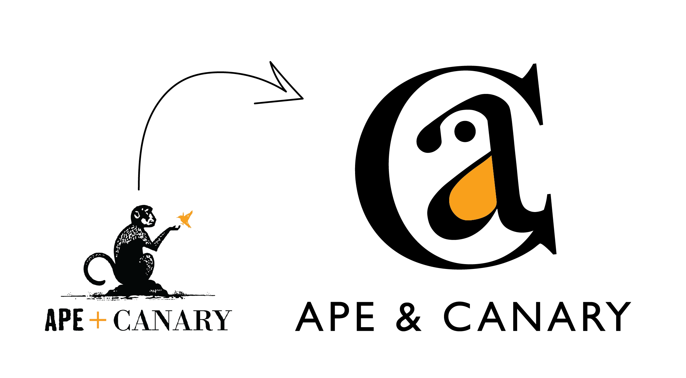

This was for one of my first year classes where we had to create a fake rebranding for a local business. Mine was a spa called Ape and Canary. I thought including the word “ape” in the name of a spa was a bold choice but I was determined to make it work. I experimented with the ape being more of a cute/ironic concept, but this felt too cartoonish for a spa, so I ditched the idea.
My first logo involved closure, in which a simplified ape and a canary created a palm tree. However, nobody could pick up on this without me pointing it out to them, so I took a different approach. I put a lowercase A inside of an uppercase C, then made the A a bird. People said the large serif titles made it look like a law firm, so I scaled the typography down by a lot for my final rendition.
My version ended up being more rescalable than the real logo, and it doesn’t display an actual ape, so the brand name is less jarring. The fontface is also very inconsistent in the real logo without any actual purpose, so I kept it simple and calm. Just how a spa should feel.


The hardest part of this process was undoubtedly creating the services pamphlet, as I was handling huge swathes of text I’d never dealt with before. It was a challenge, but the final product ended up being more cohesive than I originally thought.
For branding elements, Gill Sans was a natural font choice for non-body text, as it has many different weights and is used in my logo. I also incorporated palm tree leaves into the background to give “Ape and Canary” a warm and tropical feel, like the name suggests.